Classification with Large-Step Gradient Descent: Unifying Self-Stabilization and Convergence Rates
2026 · NeurIPS · accepted · arXiv:2611.17459
Invariant reference geometry, convergence bounds and transient implicit bias for exponential-tail losses.
A neural network can admit many solutions which fit the training data but differ in their geometric and statistical character. Which solution is found depends on the learning algorithm. I study the dynamics of these algorithms and their bias towards particular solutions, with an emphasis on gradient descent. Two questions guide this work: how architectural choices create the conditions needed for convergence, and what happens when the step size is larger than classical theory permits, as is often the case in practice.
Gradient descent (GD) attempts to minimise a smooth loss function \(\ell:\mathbb R^p\to\mathbb R\) by taking steps in the direction of its negative gradient. For a neural network \(\phi_w\) with parameters \(w\in\mathbb R^p\), input-output training data \((a_i,b_i)_{i=1}^N\) determine a parameter-function map \(f(w)=(\phi_w(a_i))_{i=1}^N\). A cost function \(C\), such as the square or cross-entropy cost, compares the outputs of this map with the target outputs \((b_i)_{i=1}^N\). The loss and GD map are then
where \(\eta>0\) is the step size. I use sharpness to mean the largest eigenvalue \(\lambda_1\) of the loss Hessian \(\nabla^2\ell\).
A skip connection adds the input of a learned transformation to its output, for example \(z\mapsto z+g_w(z)\), providing a direct path across one or more layers. A normalisation layer rescales weights or intermediate outputs using their norms or statistics such as means and variances; weight normalisation applies this rescaling to weight vectors. Skip connections and normalisation layers are ubiquitous in practical neural net architectures, yet frequently neglected in theoretical optimisation analysis. The question of how these architectural choices affect optimisation was addressed in my 2023 paper with Jack Valmadre, Hemanth Saratchandran and Simon Lucey
Classical convergence results for GD can be obtained by assuming a Polyak–Łojasiewicz (PL) inequality and Lipschitz gradients:
Here \(\ell_*\) is the infimum of the loss and \(\mu,\beta>0\). For sufficiently small step size, these properties give linear convergence of the loss to \(\ell_*\).
A sufficient condition to ensure the PL inequality (at least pointwise) is that \(f\) is a submersion, i.e. that \(Df(w)\) has full row rank for all \(w\). Overparametrisation makes this possible, since there must be at least as many parameters as output coordinates on the training data. A PL inequality for the cost then passes to the loss with a factor given by the smallest eigenvalue of \(Df(w)Df(w)^T\). Under certain conditions we give bounds on this eigenvalue in terms of the constituent layers, and demonstrate empirically that skip connections improve the relevant singular value distributions.
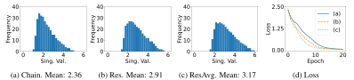
Normalisation layers address the Lipschitz gradients condition. Bounds on the layers and their derivatives give Lipschitz gradients over loss sublevel sets throughout parameter space. We use this together with submersivity to prove global convergence for a class of weight- and entry-normalised residual networks.
For certain weight-normalised residual networks, with linearly independent input data, appropriately rescaled residual branches and a continuously differentiable convex cost, there is a fixed step size for which GD converges in loss to the global infimum from any initialisation. This includes costs such as cross-entropy, whose infimum may only be attained at infinity.
A uniform PL constant is unavailable in this global setting. The proof instead shows that the positive regularity bounds along the trajectory deteriorate slowly enough for convergence to persist. The theorem has restrictive architectural and data hypotheses, but the mechanism it identifies also suggests changes to practical architectures. In particular, adding a suitably normalised deterministic map to learned convolutional skip connections improves training speed as predicted.
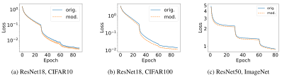
The preceding theory requires the step size to be smaller than twice the reciprocal supremum of the sharpness, which is a sufficient condition for linear stability of the algorithm at any fixed point. The reason for this classical stability threshold is already visible for a quadratic loss \(\ell(w)=\tfrac12\lambda w^2\), with \(\lambda>0\). Its GD map is
Thus \(0<\eta<2/\lambda\) gives convergence to zero; at \(\eta=2/\lambda\) the iterates oscillate with constant amplitude; and for \(\eta>2/\lambda\) a nonzero initial point gives divergence.
In 2021, Cohen, Kaur, Li, Kolter and Talwalkar demonstrated systematically that neural networks are routinely trained beyond this pointwise stability threshold. The sharpness rises during training, then fluctuates near or above \(2/\eta\), while the loss continues to decrease over longer timescales. They called this the edge of stability. The changing curvature of a neural-network loss allows behaviour which a fixed quadratic cannot exhibit.
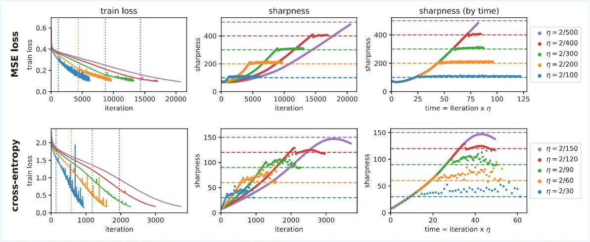
This suggests that large step size can itself bias GD towards flatter minima: increasing \(\eta\) lowers the sharpness compatible with local stability. Larger step size can also lead to better test performance in some settings. The following ResNet18 experiment illustrates this even when both step sizes eventually fit the training data.
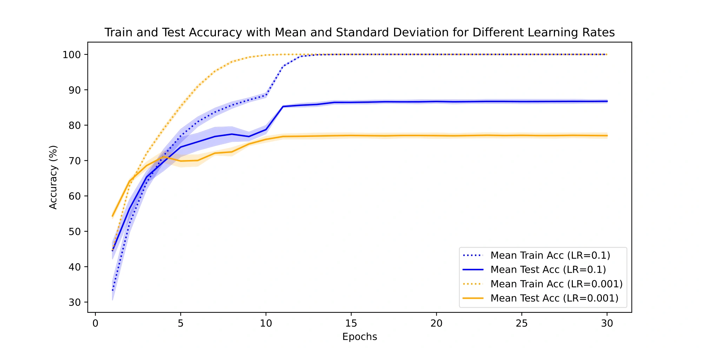
My 2025 paper with Hancheng Min, Leandro Palma, Salma Tarmoun, Ziqing Xu and René Vidal seeks to make the geometric mechanism behind the bias towards flat minima explicit. We consider overparametrised least squares with scalar output,
When \(\tau\) is a regular value, the solutions form a smooth hypersurface \(M=f^{-1}\{\tau\}\). This \(M\) is an invariant manifold for \(\mathrm{GD}\), and the key idea of our analysis is to prove a normal form for large-step GD in a neighbourhood of this invariant manifold, i.e. a choice of coordinates in which the implicit dynamics are rendered explicit.
The coordinates we choose are, up to a minor reparametrisation, tubular neighbourhood coordinates: all points near \(M\), can be realised by a pair \((x,y)\in M\times\mathbb{R}\) as in the picture below.
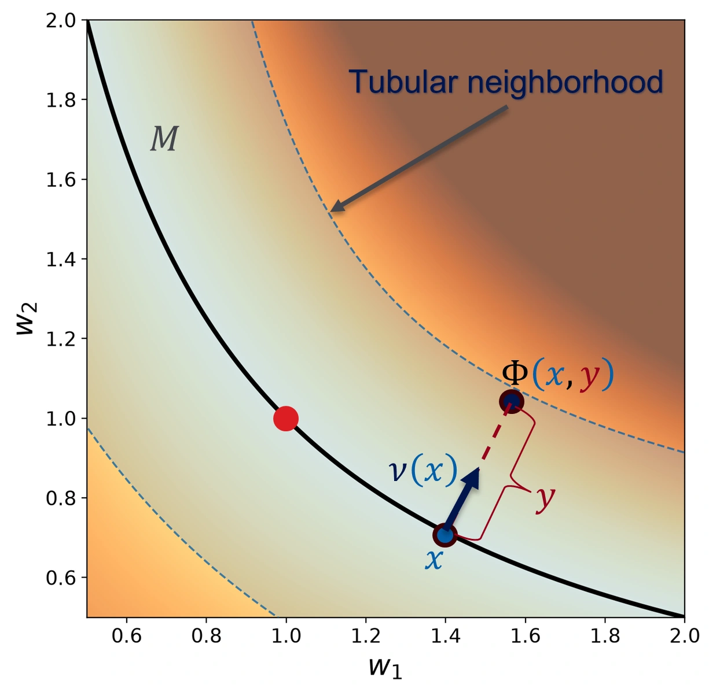
We also assume that there exists in \(M\) an isolated minimiser \(F\in M\) of the sharpness \(\lambda|_M\), and that \(\lambda|_M\) is geodesically strongly convex in a neighbourhood of \(F\).
Subject to additional assumptions in the paper and a reparametrisation of \(y\), in the coordinates \((x,y)\) in a neighbourhood of the flat minimum \(F\), \(\mathrm{GD} = (\mathrm{GD}_x,\mathrm{GD}_y)\) has the form:
Thus, to leading order, the tangential component is Riemannian GD on sharpness along \(M\), with step size \(\zeta(\eta,x)y^2\) controlled by the normal oscillation. The normal component is a parametrised flip bifurcation. At \(x = F\), the latter classically admits three convergence behaviours for all \(\eta\) sufficiently close to \(2/\lambda_F\): exponential convergence to zero when \(\eta\lambda_F<2\); polynomial convergence to zero when \(\eta\lambda_F=2\); exponential convergence to a stable period-two orbit when \(\eta\lambda_F>2\). These flip dynamics thus act as an automatic step-schedule on the Riemannian GD on \(\lambda\) coming from the \(x\)-update, from which the following convergence theorems follow.
For all initialisations sufficiently close to \(F\) with \(y\neq0\) and step sizes sufficiently close to \(2/\lambda_F\), the iterates \((x_t,y_t)\) of GD satisfy:
These results hold for deep scalar factorisation: \(f(w)=w_L\cdots w_1\), with arbitrary depth \(L\geq2\) and nonzero target. The two-layer example depicts the same mechanism in a setting where the trajectories can be drawn.
Extending this analysis beyond scalar output raises two conceptual problems. First, there are now several normal directions. A useful normal form requires a dimension reduction which separates the oscillating direction from the others. Second, flat minima need not be isolated. For problems such as matrix factorisation, they form manifolds, so geodesic strong convexity about a single flat minimum must be replaced by an appropriate condition along this manifold.
My 2026 paper with René Vidal resolves these problems for overparametrised least squares with vector-valued output,
We continue to assume that \(\tau\) is a regular value in the range of \(f\), so that the solutions again form a smooth manifold \(M=f^{-1}\{\tau\}\), and the nontrivial Hessian eigenvectors are precisely the normal directions to \(M\). There are now precisely \(q\) such nontrivial eigendirections \(\nu_1,\dots,\nu_{q}\) with corresponding eigenvalues \(\lambda_1\geq\cdots\geq\lambda_q\). Anticipating a normal form that requires taking the gradient of \(\lambda_1\), we consider only points where \(\lambda_1\) is strictly separated from the other eigenvalues.
In general, the local minima of sharpness on \(M\) can themselves form a manifold \(F\subset M\). The condition replacing strong convexity of \(\lambda_1\) is then that \(\lambda_1\) is Morse–Bott along \(F\): its Riemannian Hessian is positive in directions normal to \(F\) within \(M\). A concrete example is deep matrix factorisation: under fairly light assumptions the flat minima are not only a manifold, but a fibre bundle over a product of spheres, with typical fibre being the solution manifold of a one-lower-dimensional matrix factorisation problem.
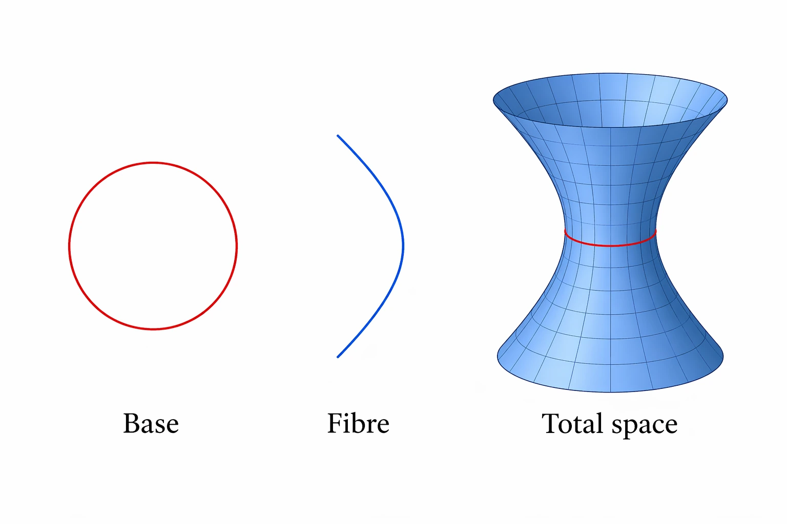
In the scalar output case \(q=1\), our coordinates were defined via a tubular neighbourhood, with the normal direction being precisely the sole nontrivial Hessian eigendirection. In the vector ouput case \(q>1\), the loss Hessian admits \(q\) nontrivial eigenvalues, necessitating dimension reduction. This is achieved using an invariant manifold and foliation, whose existence is the topic of my paper on locally invariant manifolds and foliations.
Any point \(x_*\in F\) admits a locally GD-invariant centre manifold containing a neighbourhood of \(x\) in \(M\) that is tangent to the sum of \(TM\) and the top Hessian eigendirection, whose points parametrise the leaves of a locally GD-invariant stable foliation which are tangent to the other nontrivial Hessian eigendirections.
A cartoon of the centre manifold and stable foliation is given below.
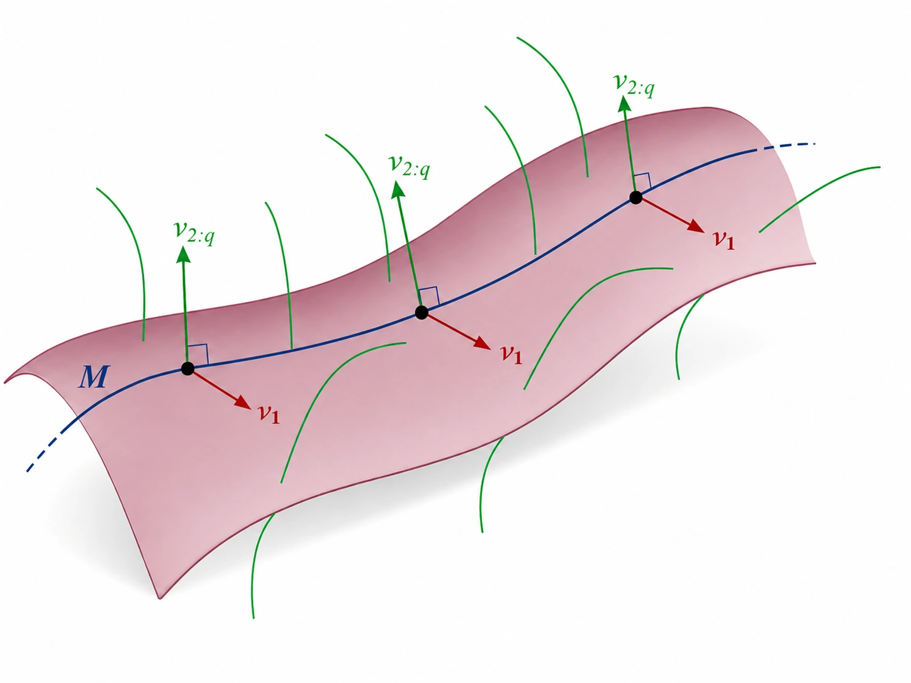
The coordinates we choose are, up to a reparametrisation of \(y_1\), centre-manifold and stable-foliation coordinates: all points sufficiently near a point of \(F\) can be realised by a pair \((x,y)\in M\times\mathbb R^q\), with \(y=(y_1,y_{2:q})\). Here \((x,y_1)\) are coordinates on the centre manifold and \(y_{2:q}\) are coordinates along the stable leaves, as in the picture above. Contraction along these leaves reduces the analysis to the coupling between \(x\) and \(y_1\).
Subject to the additional assumptions in the paper, for all points \(x_*\in F\) and all \(\eta\) sufficiently close to \(2/\lambda_1|_F\), the coordinates \((x,y_1,y_{2:q})\) may be chosen such that \(\mathrm{GD}=(\mathrm{GD}_x,\mathrm{GD}_{y_1},\mathrm{GD}_{y_{2:q}})\) has the form:
Here \(\zeta(\eta,x)\) is a positive \(C^1\) function, \(\nabla_M\) is the Riemannian gradient, \(d_M(x,F)\) is geodesic distance to \(F\), and \(\Lambda_{2:q}(x)\) has eigenvalues \(\lambda_2(x),\ldots,\lambda_q(x)\). The coordinates are \(C^4\) in the normal variables and \(C^1\) in the base variable.
Notice the \(x,y_1\) component of the update is the same as in the \(q=1\), and in particular is completely independent of \(y_{2:q}\); this is thanks to the invariance of the centre manifold and stable foliation. The new coordinate \(y_{2:q}\) simply contracts to zero thanks to the spectral gap condition and the assumption that \(\eta\) is sufficiently close to \(2/\lambda_1|_F\). The convergence results are therefore essentially the same as in the \(q=1\) case.
Under the same hypotheses, for all initialisations sufficiently close to \(F\) with \(y_{1,0}\neq0\) and step sizes sufficiently close to \(2/\lambda_F\), the iterates \((x_t,y_t)\) of GD satisfy:
The following plots show these three regimes in deep matrix factorisation.
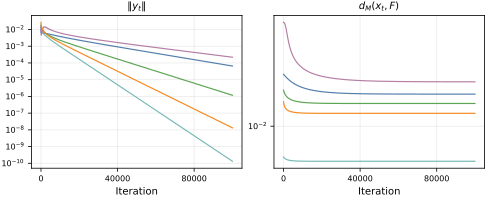
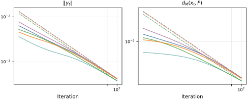
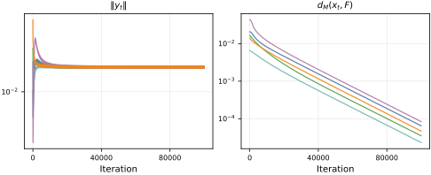
Convergence theorems for large-step GD with logistic losses were already proved by Jingfeng Wu, Peter Bartlett, Matus Telgarsky and Bin Yu, leveraging the asymptotically flat nature of of such loss landscapes on linearly separable data using optimisation-theoretic techniques. A natural question is whether such theorems can also be obtained from the geometric perspective of invariant manifolds and normal forms as used in our least-squares theory.
The key problem that must be overcome in performing such analysis is the identification of a suitable invariant reference manifold. In my 2026 paper with Salma Tarmoun, Konstantinos Emmanouilidis, Ziqing Xu and René Vidal, we consider for this manifold a line \(\mathcal R=\operatorname{span}\{v\}\), with \(\|v\|=1\); we require \(\nabla\ell(xv)\in\mathcal R\), so GD preserves this line. A simple example of an objective admitting such a line is given in the animation below; we also prove that cross-entropy regression on suitably symmetric data admits such a line, namely the max-margin line.
At a high level, our coordinates now follow a similar decomposition to what we saw in the square loss case: write \(w=xv+y\), where \(x\in\mathbb R\) is the coordinate along the line and \(y\) is the orthogonal component. Define the restricted loss and curvature operator by
Suppose that the top eigenvalue \(\lambda_1\) of \(H\) is simple and that its top eigenvector is orthogonal to \(\mathcal R\). Then in the coordinates \(x,y\) one has \(\mathrm{GD}=(\mathrm{GD}_x,\mathrm{GD}_y)\) taking the form
Assuming an exponential tail on the loss and curvature in the same direction along the invariant line, as we see in cross-entropy classification on symmetric data, enables the following three-phase convergence result.
For all initial conditions sufficiently close to \(\mathcal R\) and all step sizes sufficiently close to the initial stability threshold, the iterates of GD evolve according to the following three phases:
The normal form explains why these phases occur. In the top eigendirection of \(H\) with sharpness \(\lambda_1\), the leading multiplier in the \(y\)-update is \(1-\eta\lambda_1\). If \(\eta\lambda_1>2\), its sign is negative and its magnitude exceeds one, producing growing oscillations. Meanwhile, \(h'(x)<0\) drives \(x\) forwards. Since \(H'(x)\preceq0\), the quadratic coupling in the \(x\)-update adds forward drift: larger transverse excursions accelerate the motion towards smaller curvature. The instability thus helps remove its own cause, yielding the first phase of convergence.
Once the reference sharpness falls below the stability threshold of the step size, \(1-\eta\lambda_1\) becomes uniformly contractive for as long as \(\lambda_1\) can be bounded below by some fixed positive constant, yielding the linear contraction phase. Asymptotically, \(\lambda_1\) goes to zero at a polynomial rate, causing the contraction multiplier \(1-\eta\lambda_1\) to go to 1 at a polynomial rate, hence leading to the polynomial contraction of the iterates toward \(\mathcal R\).
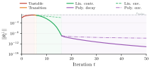
This geometric analysis of large-step gradient descent is local, requiring an invariant manifold about which to prove normal forms and convergence theorems. To make this geometric theory global therefore requires identifying invariant manifolds connecting practical initialisations to solution sets, along which normal forms could be derived to cover the entire training trajectory.
Further questions concern nonlinear architectures and the inclusion of stochasticity and momentum in the optimisation algorithms. A statistical theory connecting these dynamical mechanisms to generalisation is also desirable.
2026 · NeurIPS · accepted · arXiv:2611.17459
Invariant reference geometry, convergence bounds and transient implicit bias for exponential-tail losses.
2026 · Preprint · arXiv:2607.08380
A local normal form in arbitrary codimension, three convergence regimes, and the geometry of flat minima in deep matrix factorisation.
2026 · Preprint · arXiv:2604.18202
Locally invariant geometry for smooth maps that need not be invertible, motivated by large-step optimisation.
2025 · NeurIPS 38
The codimension-one starting point of the large-step program, subsequently extended and refined in the 2026 work.
2026 · IEEE Signal Processing Magazine 43(3), 37–51 · equal first contribution